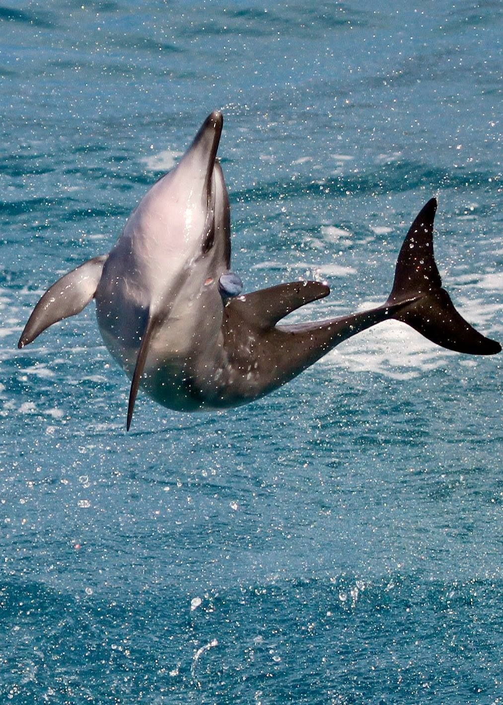

|  |
The spinner dolphin (Stenella longirostris) is a small dolphin found in off-shore tropical waters around the world.
It is famous for its acrobatic displays in which it rotates around its longitudinal axis as it leaps through the air.
It is a member of the family Delphinidae of toothed whales.
Adults are typically 129–235 cm long and reach a body mass of 23–79 kg.This species has an elongated rostrum and a triangular or subtriangular dorsal fin.
Spinner dolphins generally have tripartite color patterns. The dorsal area is dark gray, the sides light gray, and the underside pale gray or white.
Also, a dark band runs from the eye to the flipper, bordered above by a thin, light line. However, the spinner dolphin has more geographic variation in form and coloration than other cetaceans.
In the open waters of eastern Pacific, dolphins have relatively small skulls with short rostra. A dwarf form of spinner dolphin occurs around southeast Asia.
In these same subspecies, a dark dorsal cape dims their tripartite color patterns. Further offshore, subspecies tend to have a paler and less far-reaching cape.
In certain subspecies, some males may have upright fins that slant forward.
Some populations of spinner dolphin found in the eastern Pacific have bizarre backwards-facing dorsal fins, and males can have strange humps and upturned caudal flukes.
Spinner dolphins are known for their acrobatics and aerial behaviors. A spinner dolphin comes out of the water front first and twists its body as it rises into the air.
When it reaches its maximum height, the dolphin descends back into the water, landing on its side. A dolphin can make two to 5.5 spins in one leap; the swimming and rotational speed of the dolphin as it spins underwater affects the number of spins it can do while airborne.
These spins may serve several functions. Dolphins may also make nose-outs, tail slaps, flips, head slaps, "salmon leaps", and side and back slaps.
|